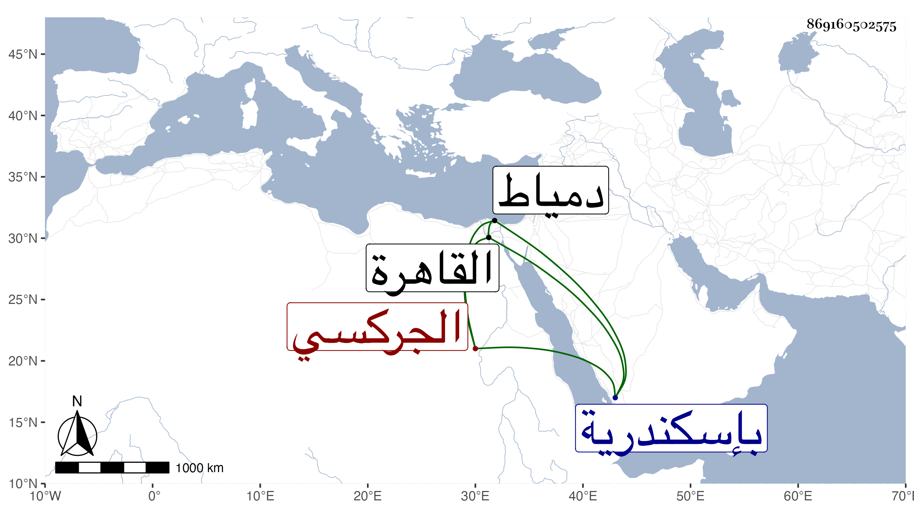

0902Sakhawi.DawLamic.ITO20230111-ara1.EIS1600.869160502575
Biography ID: 869160502575
657
قانباي الجركسي . أصله من مماليك الأتابك يشبك الشعباني ثم أنعم به على جاركس المصارع أخي الظاهر جقمق فأعتقه وصار بعد قتله من المماليك السلطانية ثم خاصكيا في أيام الظاهر ططر فلما صار الأمر للظاهر جقمق من حين كونه نظاما لزمه بوسيلة كونه من مماليك أخيه حتى رقاه لأمره عشرة ثم جعله من رؤوس النوب فلما تسلطن عمله شاد الشربخاناه على ما معه من إمرة العشرة ولا زال يرقيه حتى قدمه مع المشدية ثم عمله دوادارا كبيرا ثم أمير آخور كبير ، ونالته السعادة وعظم وصارت له كلمة نافذة ووجاهة تامة مع تدين ووثوق برأي نفسه وظنه التفقه ومزيد طيش وخفة وهذيان كثير ورفع صوت بما يستحيا منه حتى أنه قال لشيخنا : أنت شيخ الإسلام وأنا فارس الإسلام ، وبالجملة فقد كان دينا وله في كائنة شيخنا اليد البيضاء واستمر إلى أن قبض عليه الأشرف إينال أول ما تسلطن وحبسه بإسكندرية إلى أن أطلقه الظاهر خشقدم وأرسله إلى دمياط فأقام بها بطالا حتى مات وقد قارب الثمانين في ربيع الآخر سنة ست وستين وحمل ميتا منها إلى القاهرة فغسل بها وكفن ثم صلي عليه بمصلى المؤمني وشهده السلطان بل مشى معه إلى باب المدرج ودفن بتربته التي جددها وبناها بالقرب من دار الضيافة وبها أستاذه جاركس وولد لصاحب الترجمة وابن الظاهر جقمق ثم أبوه ثم ولده الآخر المنصور وصارت محلا للملوك وقرر فيها شيخنا الشمني مخطوبا شيخا وخطيبا وغير ذلك من وظائفها بل كان المستقل بها وكان له فيه حسن الإعتقاد ويبالغ في إكرامه وكان طوالا نحيفا طويل اللحية رحمه الله وإيانا .
